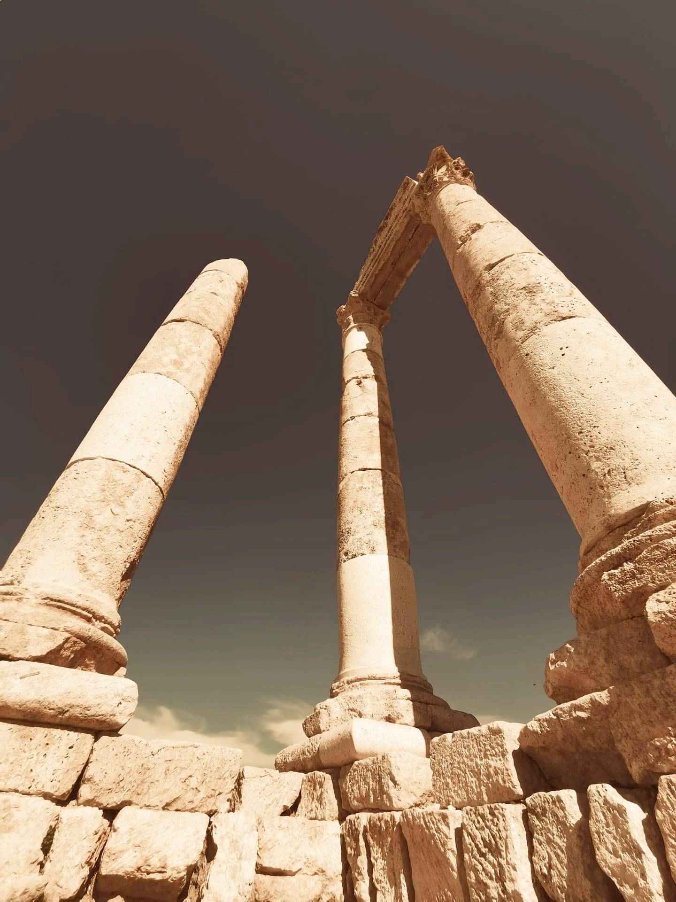
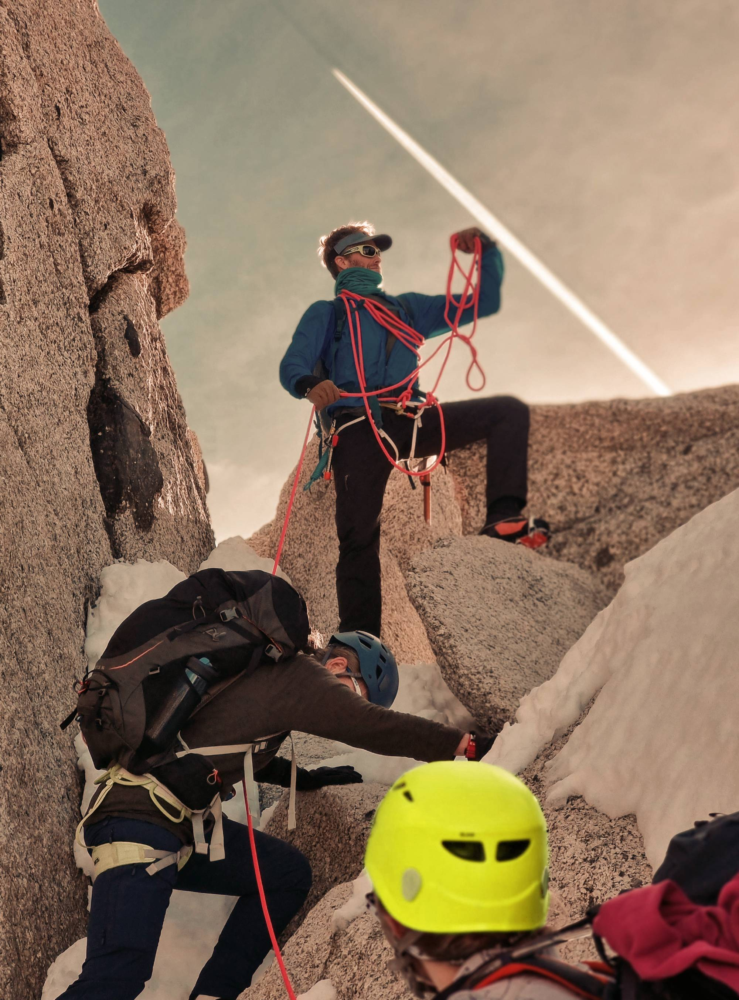

Mina redigerade bilder
Här kan se orginalbilderna jämfört med mina slutgiltiga resultat
Bild 1: Borttaget objekt
Original
![[Bild tagen underifrån på gamla ruiner, människa hoppar i mitten]](images/bilserie011.webp)
Redigerad

Vad jag har gjort: I den här bilden har jag använt mig av Photopea för att ta bort personen i bilden. Jag har även justerat ljuset och färgbalansen.
Bild 2: Färgläggning
Original
![[En grupp bergsklättrare påväg uppåt, personen närmast kameran har en orange hjälm]](images/bilserie015.webp)
Redigerad

Vad jag har gjort: Här valde jag att färglägga hjälmen på personen närmast kameran. Jag markerade det med quick selection verktyet, skapade en mask och ändrade färgen. Ändrade även färgbalansen.
Bild 3: Färg- och ljusjustering
Original
![[Färgglada hus längs en kanal med båtar, ett flygplan skymtas på himlen]](images/bilserie007.webp)
Redigerad
![[Färgglada hus längs en kanal med båtar, flygplanet är borttaget och ljus och färgbalans är fixad för att matcha övriga]](images/bildserie001.webp)
Vad jag har gjort: I bild tre låg fokus på att skruva på nivåerna och kontrasten för att få den att smälta in bra med de andra två.